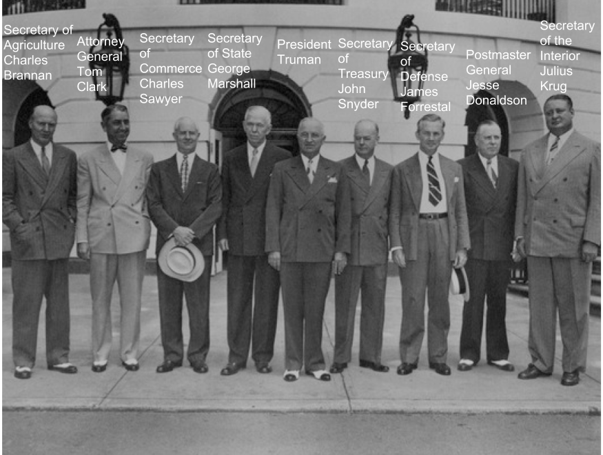

Truman was born in Lamar, Missouri on May 8, 1884. He grew up in Independence Missouri. His parents were John and Martha Truman. He had to wear glasses due to his poor vision. Truman was the captain of his artillery unit in WWI and married Elizabeth Wallace. He had a daughter named Mary Truman and died on December 26, 1972 in Independence, Missouri.
Truman had 2 big slogans. One was Give’em Hell Harry! and the other was The Buck Stops Here. He used these sogans because he said what he thought, when others would be afraid to do so, and because he took responsibility for what he did.
Truman became President after Franklin Roosevelt died shortly after his election. He served the rest of the term from 1945 to 1949. He was elected and served a second term from 1949 to 1953. During his time in office he tried to stop the spread of communism, recognized Israel as a nation, initiated the Berlin airlift, proposed the Fair Deal, supported the creation of NATO and sent troops to South Korea to defend them from the North Koreans.
Truman is the only person to have ever approved the use of nuclear weapons in war when he approved the dropping of atomic bombs on the Japanese cities of Hiroshima and Nagasaki.
When Truman noticed that the White House was under a lot of physical stress and at risk of collapsing, the White House was rebuilt. Everything within the outside wals was rebuilt. These renovations lasted from 1948 to 1952. Truman also had a pet dog, cat, and pony when he lived on a farm. During his presidency, he recieved two dogs as gifts, but they were both eventually given away.